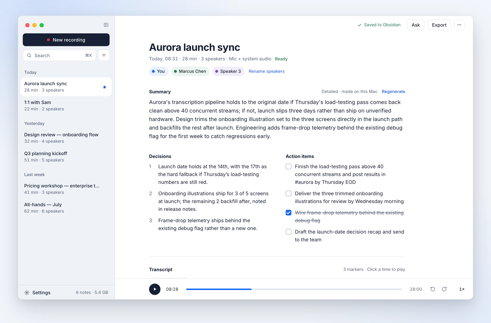
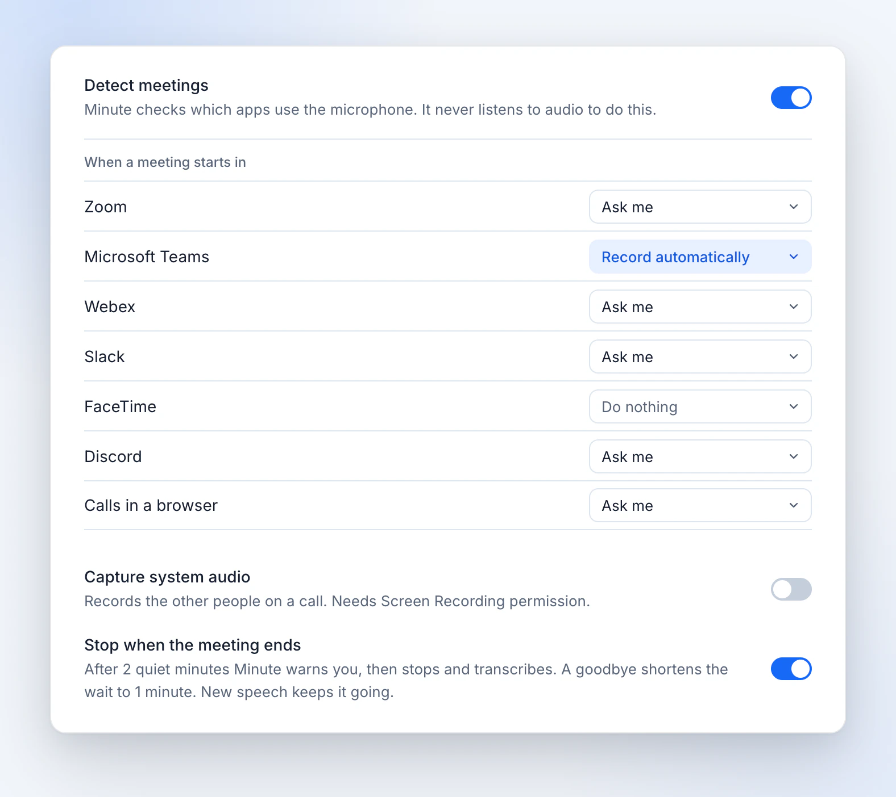
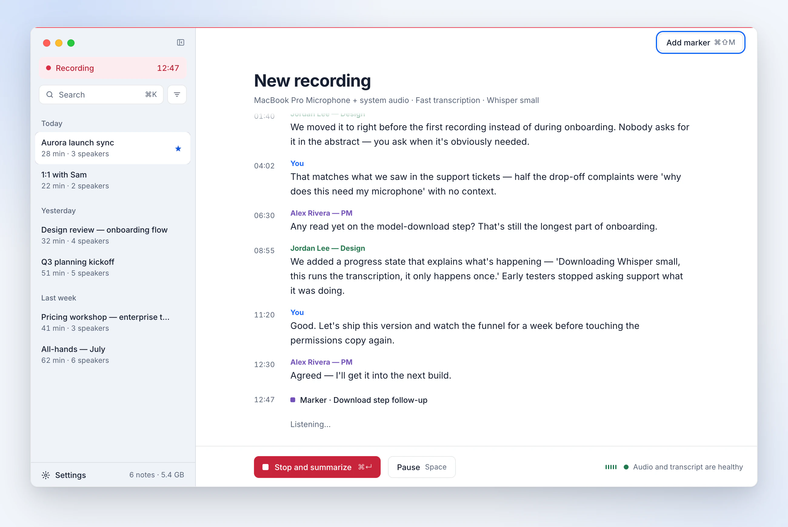
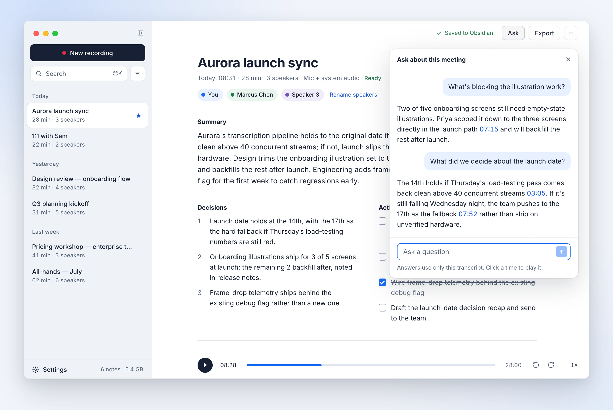
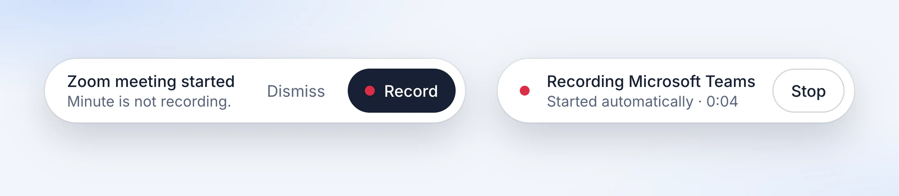
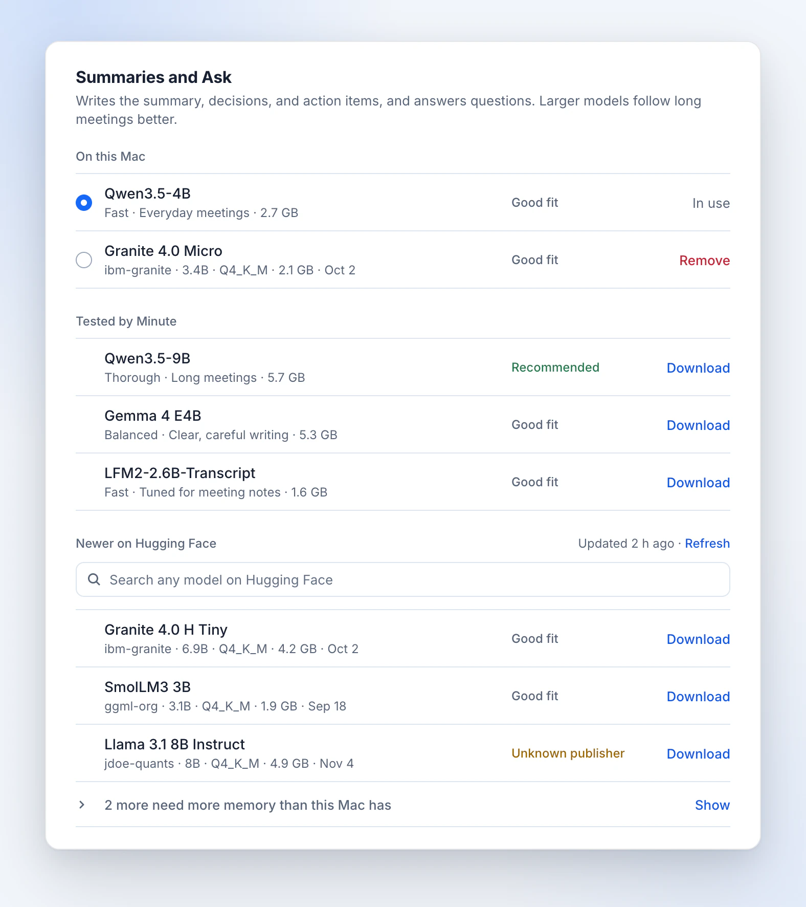
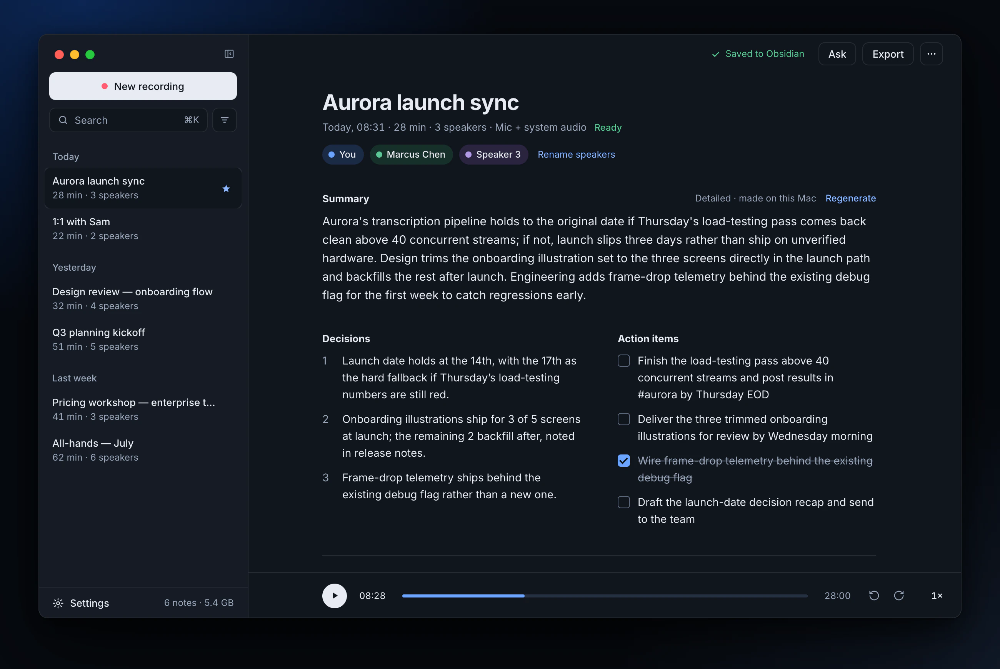

Free, offline AI note taker for macOS
Meeting notes that never leave your Mac.
Minute records your meetings, transcribes them as you speak, labels who said what, and writes the summary, decisions, and action items. No bot joins the call. It works with Zoom, Teams, Google Meet, and other calls, and the models run offline on your Mac, not somebody else's server.
Version 1.13.0 · signed & notarized by Apple · all releases
Free · Open source, MIT · macOS · No account

No bot joins your call
Minute records on your Mac, not in the meeting. It captures your microphone and, on macOS 13 or later, the system audio, which is how it hears the other people on the call. Nobody sees a new participant, and nobody has to let one in.
System audio needs the Screen Recording permission. Without it, Minute records your microphone only.

Everything the app sends over the network
That's the whole list. Turn off Wi-Fi and everything still works. The code is open — you can check.
Transcribed as you speak, every speaker named
On-device Whisper keeps pace with the conversation, and local diarization works out who said what. Minute can remember the voices you name and write "Sarah" into the next transcript by itself — with an Undo. Timestamps play the audio.

Ask your notes, get answers with citations
Ask any meeting a question. Answers cite the second it was said, and clicking a citation jumps there.

It notices when a meeting starts — and ends
When Zoom, Teams, or a browser call uses your mic, a quiet pill offers to record. When the call ends — even if the app stays open — or the room goes quiet, Minute offers to stop and transcribe. It watches device and process state, never audio. Detection is off by default.

Pick your models
Choose the Whisper size and summary model that fit your Mac's memory. Offline after the download.

Native, not wrapped
A Rust app with whisper.cpp and llama.cpp compiled in, running on Metal. No Electron, no Python runtime. Notes are plain text and WAV in a folder you own. Signed and notarized by Apple. MIT licensed.

Frequently asked questions
Is Minute free?
Yes. Minute is free and open source, and it needs no account.
Does it work offline?
Yes. After you download the models once, Minute records, transcribes, summarizes, and answers questions with Wi-Fi turned off. It goes online only to download a model, to list models, and to check for an update. You can turn off the update check in Settings.
Does a bot join my Zoom or Teams call?
No. Minute records on your Mac. It captures your microphone and, on macOS 13 or later, the system audio, so it hears the other people on the call without joining it. Meeting detection covers Zoom, Teams, Webex, Slack, FaceTime, Discord, and calls in a browser, such as Google Meet.
Which Macs does it run on?
Minute needs macOS 11 or later. System audio needs macOS 13 or later and the Screen Recording permission. To notice that a call ended while the meeting app stays open, Minute needs macOS 14.2 or later. Apple silicon is the tested target. The Intel build is not yet tested on real Intel hardware, and the large Whisper models need Apple silicon. The smaller models need 8 GB of memory, the larger ones 16 GB.
Can it save notes to Obsidian?
Yes. Choose your vault folder in Settings, and Minute writes a Markdown file each time a summary finishes. It can add the date, title, duration, and speakers as properties. Without Obsidian, export any note as Markdown.
Is it open source?
Yes. The code is on GitHub under the MIT license, and each release is signed and notarized by Apple.
How does it compare with Granola and Otter?
Granola and Otter transcribe in the cloud, and Otter's assistant joins Zoom, Teams, and Google Meet calls. Minute writes the transcript and the summary on your Mac, with no bot. Read how Minute compares as a Granola alternative and as an Otter alternative, including when each of those apps is the better choice.